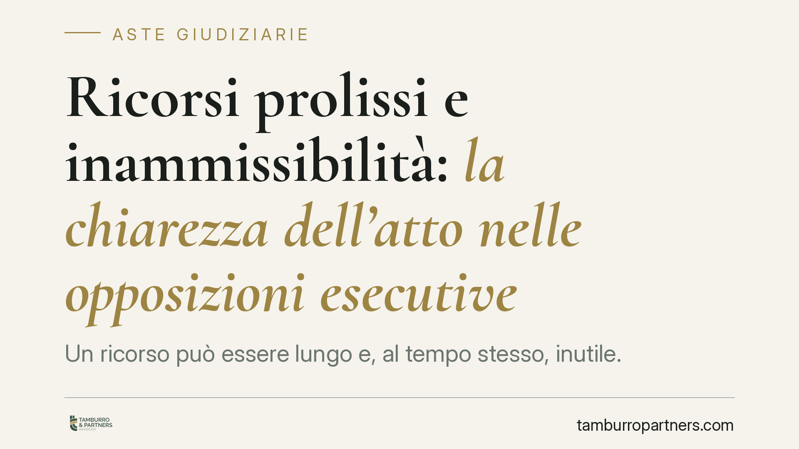

Ricorsi prolissi e inammissibilità: la chiarezza dell'atto nelle opposizioni esecutive
Un ricorso può essere lungo e, al tempo stesso, inutile. Nelle procedure di espropriazione immobiliare la Cassazione continua a dichiarare inammissibili le impugnazioni prolisse ma prive di una chiara esposizione dei fatti. Per chi contesta un'asta attraverso l'opposizione agli atti esecutivi, la forma dell'atto non è un dettaglio: è una condizione di accesso al giudizio.

Il principio: la lunghezza non supplisce alla chiarezza
La linea della Terza Sezione civile della Corte di Cassazione, in materia di espropriazione immobiliare e opposizioni esecutive, è costante: un ricorso che si dilunga senza esporre con precisione i fatti rilevanti non è un atto completo, ma un atto difettoso.
La norma di riferimento è l'art. 366 c.p.c., che elenca il contenuto necessario del ricorso per cassazione. Il n. 3 impone l'«esposizione sommaria dei fatti della causa»: sommaria, cioè selettiva e ordinata, non esaustiva fino all'illeggibilità. Il principio di sinteticità e chiarezza degli atti processuali è oggi codificato anche dal D.M. Giustizia n. 110/2023, che fissa criteri redazionali (struttura, limiti dimensionali, parametri di chiarezza) applicabili agli atti del processo civile. Per il giudizio di legittimità operano inoltre i protocolli e i criteri specifici elaborati dalla Cassazione.
Esposizione dei fatti e autosufficienza: due vizi distinti
È utile tenere separati due profili spesso confusi.
Il n. 3 dell'art. 366 c.p.c. riguarda l'esposizione dei fatti: il ricorso deve consentire al giudice di comprendere la vicenda senza dover ricostruire autonomamente il fascicolo. Il n. 6 riguarda invece l'autosufficienza, cioè l'onere di indicare specificamente gli atti e i documenti su cui il ricorso si fonda e di localizzarli nel fascicolo processuale.
Un atto può violare l'uno, l'altro o entrambi. L'eccesso di pagine, paradossalmente, aggrava il rischio: quando il ricorso accumula argomenti, richiami e trascrizioni senza gerarchia, la censura diventa inintelligibile e la Corte la dichiara inammissibile per oscurità. Non è una sanzione sulla quantità in sé, ma sulla sua incapacità di rendere chiaro il nucleo della contestazione.
Il contesto: l'opposizione agli atti esecutivi nelle aste
Nelle vendite forzate immobiliari, l'opposizione agli atti esecutivi ex art. 617 c.p.c. è lo strumento con cui si contestano i vizi formali degli atti del processo esecutivo: irregolarità dell'avviso di vendita, dell'ordinanza di delega, delle modalità di pubblicità, della notificazione.
Il termine è di venti giorni, ma il dies a quo va individuato con attenzione. La norma distingue l'opposizione relativa alla regolarità formale del titolo e del precetto da quella successiva: in generale, il termine decorre dal momento in cui l'atto è compiuto o comunque dalla sua legale conoscenza. Nel contesto delle aste significa, a seconda del vizio contestato, la notifica o la conoscenza dell'avviso di vendita o dell'ordinanza. La scelta del momento iniziale è una verifica preliminare da cui dipende l'ammissibilità stessa dell'opposizione.
Cosa cambia per il debitore espropriato
La distinzione pratica è netta. Una cosa è perdere perché le ragioni di merito non reggono; altra cosa è non arrivare nemmeno all'esame del merito perché l'atto è stato scritto male.
Nel secondo caso le conseguenze economiche sono immediate. Il ricorrente sopporta le spese di lite e, per legge, il raddoppio del contributo unificato: l'art. 13 comma 1-quater del D.P.R. n. 115/2002 prevede che, in caso di impugnazione dichiarata inammissibile, improcedibile o integralmente respinta, sia dovuto un ulteriore importo pari al contributo già versato. Non è un'eventualità, è la regola.
Cosa fare in concreto
- Verificare subito il termine di venti giorni ex art. 617 c.p.c. e, prima ancora, individuare con precisione il dies a quo rispetto all'atto esecutivo che si intende contestare.
- Costruire l'atto partendo da un'esposizione dei fatti ordinata e selettiva (art. 366 n. 3 c.p.c.): solo gli elementi necessari a comprendere la vicenda.
- Separare i motivi: ogni vizio in un paragrafo autonomo, con indicazione specifica dell'atto o documento su cui si fonda (art. 366 n. 6 c.p.c.).
- Rispettare i criteri di sinteticità del D.M. n. 110/2023 e i protocolli redazionali applicabili al grado di giudizio.
- Valutare preventivamente il rischio economico in caso di esito negativo, incluso il raddoppio del contributo unificato.
Contributo informativo a cura di Tamburro & Partners - Avv. Giuseppe Tamburro. Non costituisce parere legale.
Comprare bene all’asta si può.
Se vuoi acquistare un immobile all’asta in sicurezza o difendere un esecutato, scrivi allo studio. Ti rispondiamo entro un giorno lavorativo.